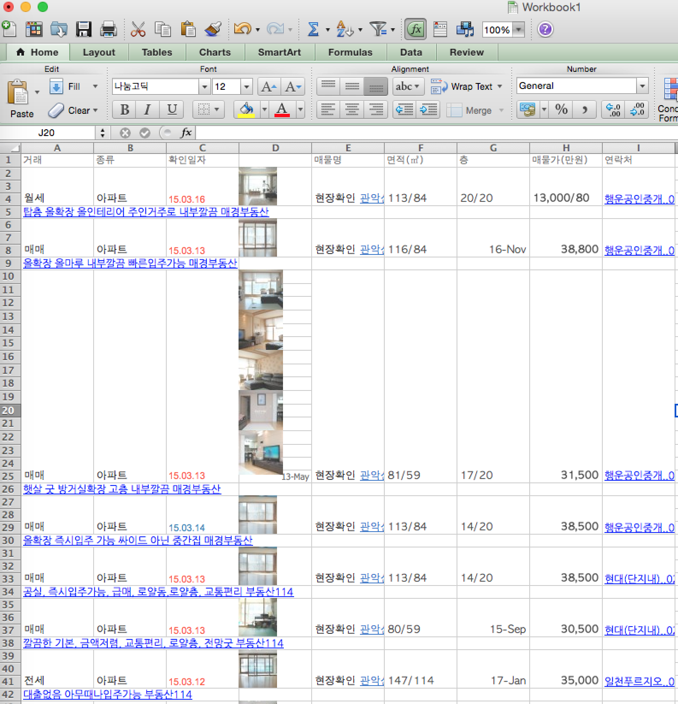
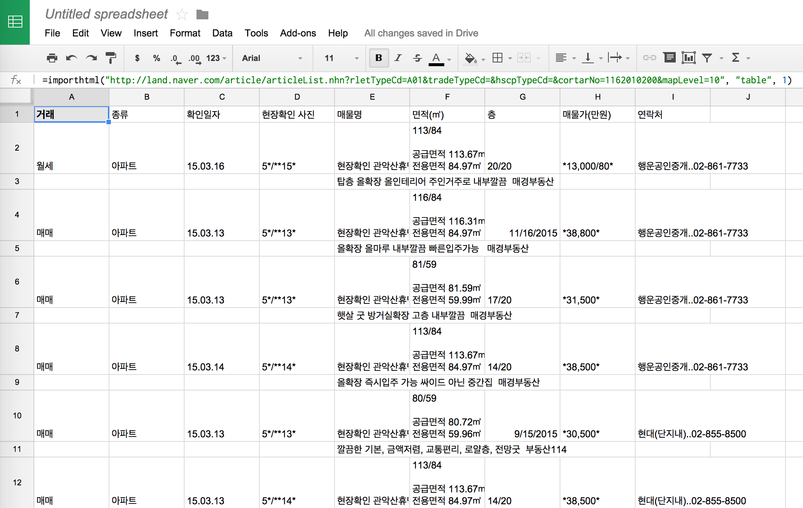
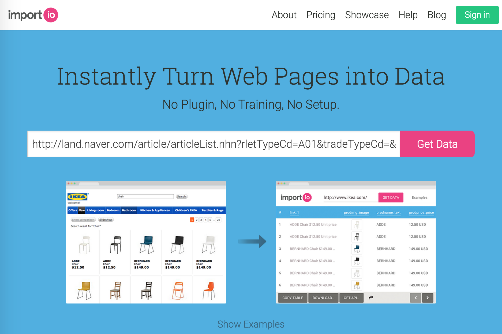
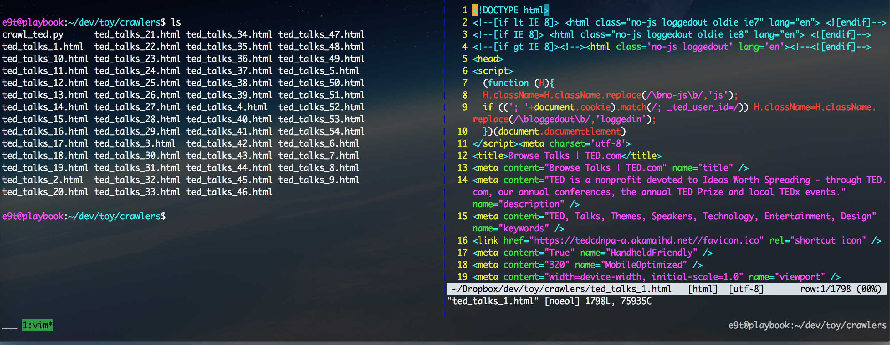
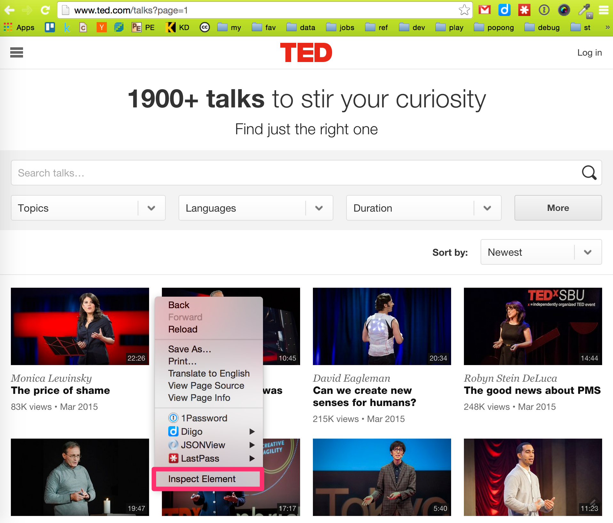
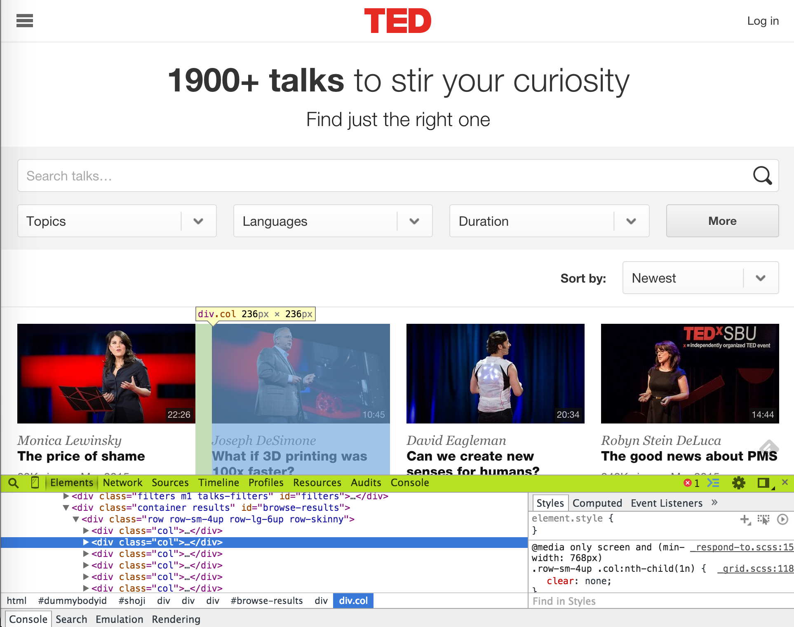
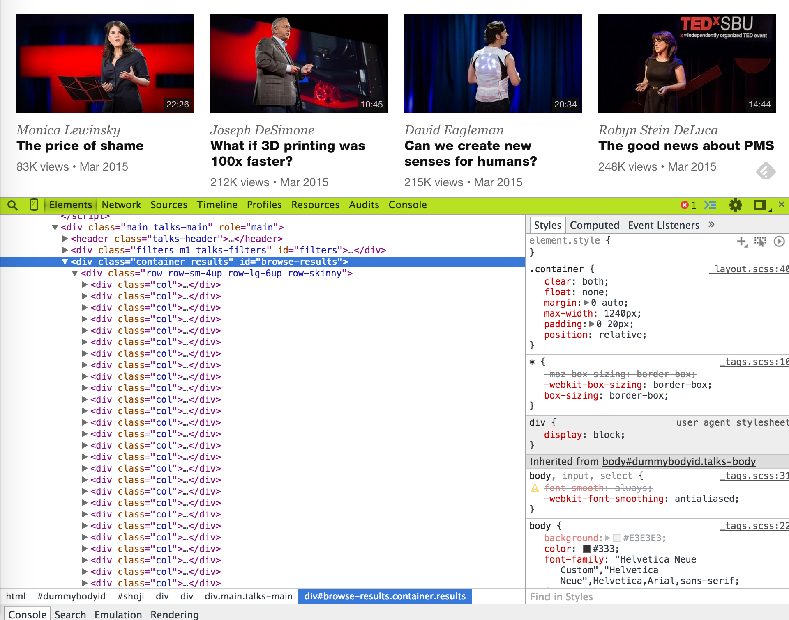
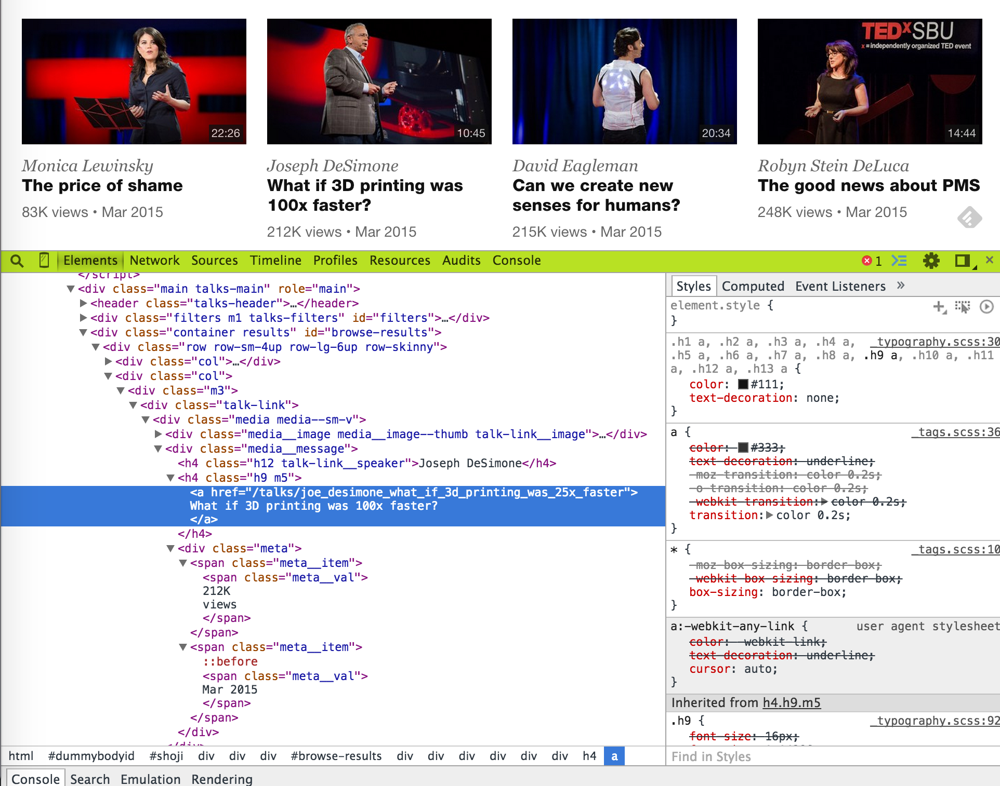

Choose a target of your choice:
Method 1: ctrl + c / ctrl + v

Method 2: Google spreadsheet

Method 3: import.io (or some other scraping service)

Method 4: Being the programmer
Let's try programming a crawler ourselves.
1. Identify Web page URL
- First find a Web page where you can find item lists
- Let's understand the URL (cf. Online URL decoder/encoder)
- It is best to find a page where the URL is has an iterable parameter (ex: page numbers, item IDs)
- TED.com talks: http://www.ted.com/talks?page=1
pageis iterable from 1 to 54
- Amazon.com TVs:
http://www.amazon.com/s/?rh=n:172282,n:!493964,n:1266092011,n:172659&page=1pageis iterable from 1 to 143
- TED.com talks: http://www.ted.com/talks?page=1
- Set the variables
npages,url_base, and also afile_baseto name download files. Normally, you want to set npages to a smaller number (ex: 3), rather than the actuall value (i.e., 54) to test the code before actually executing it.npages = 54 url_base = 'http://www.ted.com/talks?page=%s' file_base = 'ted_talks_%s.html'
2. Download Web pages
-
First define a function named
save_textdef save_text(text, filename): with open(filename, 'w') as f: f.write(text)
-
Then using the list URL found on step 1, download list pages. We will use the package
requestsfor this taskimport requests for page_num in range(1, npages+1): print(page_num) r = requests.get(url_base % page_num) save_text(r.text, file_base % page_num)
-
Check whether the pages have downloaded succesfully

3. Parse downloaded Web pages
-
Before we go any further, let's recall how an html document looks like. Take a look at one of the downloaded html docs as well.
<!DOCTYPE html> <html> <head> <meta charset="utf-8"> <link rel="stylesheet" href="..."> <script type="text/javascript" src="..."> </head> <body> <!-- This is a comment --> ... and this is where the visible contents go ... </body> </html>
-
Now, let's set the
page_numto 1 for detailed investigation, rather than creating aforloop for all pagespage_num = 1
-
For parsing, we'll be using
lxml.html. Many people also use regex. There are various many other options (ex: bs4), so feel free to Google them up.from lxml import html root = html.parse(file_base % page_num)
-
With
root, we can easily parse a given text using xpaths, just by identifying the tag, class, or id of an html element. Why don't we try extracting all the text from the<body>tag? Try this:print(root.xpath('//body//text()'))
-
Cool, huh? Now, let's think of what we want to extract from our downloaded html, and picture what we want as a result. From our html page, we probably want to extract the title, speaker, view count, date, and url of all TED talks, resulting in a spreadsheet format as follows:
title speaker views date url The price of shame Monica Lewinsky 83K Mar 2015 http://... What if 3D printing was 100x faster? Joseph DeSimone 212K Mar 2015 http://... Can we create new senses for humans? David Eagleman 215K Mar 2015 http://... The good news about PMS Robyn Stein DeLuca 248K Mar 2015 http://... ... ... ... ... ... -
So, in order to find what tag, class, or id we need to exact such elements, let's go back to www.ted.com/talks?page=1, right click, and "Inspect Element"s.
  -
By navigating with the DOM, we can see that the
divtag withid=browse-resultscontains all the talk items indivtags withclass=col, each containing a talk item. (When identifying and html element, using id is better than using a class, because normally ids are unique within a html page.)
 -
Now, let's use xpath to get the talk items.
items = root.xpath('//div[@id="browse-results"]//div[@class="col"]') print(len(items)) # returns 36, the number of talk items in the page
-
Dig into one of the
<div class="col">s, to further investigate the identifiers of talk information.
 -
Choose one item and extract relevant data.
item = items[0] print(item.xpath('.//h4[@class="h12 talk-link__speaker"]/text()')) print(item.xpath('.//h4[@class="h9 m5"]/a/text()')) print(item.xpath('.//h4[@class="h9 m5"]/a/@href')) print(item.xpath('.//span[@class="meta__val"]/text()'))
-
All the items are contained in a list, and it would be better if we could strip the new lines(
\n) from the strings. Additionally, rather than handling each info separately, let's put the extracted info into one dictionary, and make that a function namedparse_item().def parse_item(item): return { 'speaker': item.xpath('.//h4[@class="h12 talk-link__speaker"]/text()')[0], 'title': item.xpath('.//h4[@class="h9 m5"]/a/text()')[0].strip('\n'), 'href': item.xpath('.//h4[@class="h9 m5"]/a/@href')[0], 'views': item.xpath('.//span[@class="meta__val"]/text()')[0].split('\n')[1], 'date': item.xpath('.//span[@class="meta__val"]/text()')[1].strip('\n') }
-
Perfect. Now let's iterate through the items on page 1.
data = [] for item in items: d = parse_item(item) data.append(d) print(len(data)) # returns 36
-
Great. Now we're ready to iterate through all 54 web pages.
data = [] for page_num in range(1, npages+1): root = html.parse(file_base % page_num) items = root.xpath('//div[@id="browse-results"]//div[@class="col"]') for item in items: d = parse_item(item) data.append(d) print(len(data)) # returns 1943 or a similar number
4. Save the parsed data to file
- We currently have our data in a dictionary format.
-
Normally, it's enough to save this data directly into a json file.
import json with open('data.json', 'w') as f: json.dump(data, f)
- JSONView is a nice way to pretty print your json.
-
However, sometimes it's better to convert this data into a spreadsheet. If so, try this:
import csv with open('data.csv', 'w') as f: writer = csv.DictWriter(f, fieldnames=data[0].keys()) writer.writeheader() writer.writerows(data)
5. What's next?
- You can see a refactored, cleaner code of the crawler above here. Try to understand the syntax yourself.
- Furthermore, you can traverse into the individual talk urls you have just acquired from the list pages.
- Concurrent crawling may come of use. Consult this presentation material.
- Try crawling some other website of interest.
- If you already have enough data to crunch, go ahead and crunch 'em!
References
Below are some Web crawler examples. Most are for Python 2, so be careful.